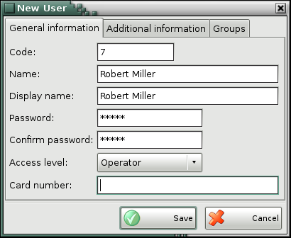
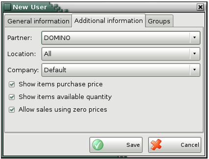
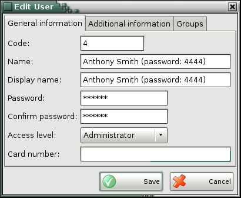
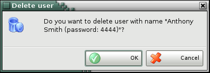

Adding, editing and deleting users
You can add users in the list in the New user window.

Click the General information tab to enter basic user details: code, name, password, confirm password and access level.
The first user that is added to the list automatically receives Owner access level. The access level for the other users can be selected from a predefined list: operator, manager, administrator and owner.

The Partner field contains a list of all clients in the application. Only owners and administrators can select a partner. The Partner fields is locked when a user is logged in and all operations for other partners became automatically invisible.
The Location field contains a list of all locations. Only owners and administrators can select a location. The Location field is locked when a user is logged in and all operations for other locations became automatically invisible.
Disable the Show items purchase price option to hide purchase prices in the items list, when performing an operation, as well as to hide them in all reports, containing purchase prices and purchase amounts.
Disable the Show items available quantity option to hide item quantities for the selected location in the operations table.
Disable Allow sales using zero prices to forbid saving sale operation, when there are items with zero prices.
Select the group you wish to delete and click on the Delete button:
You can edit all user parameters in the Edit user window.

To delete a user from the list, select the corresponding row and click the Delete button or press the Delete key.

Confirm the deletion in the pop-up window to complete the action.
�2006-2015 Microinvest, All rights reserved